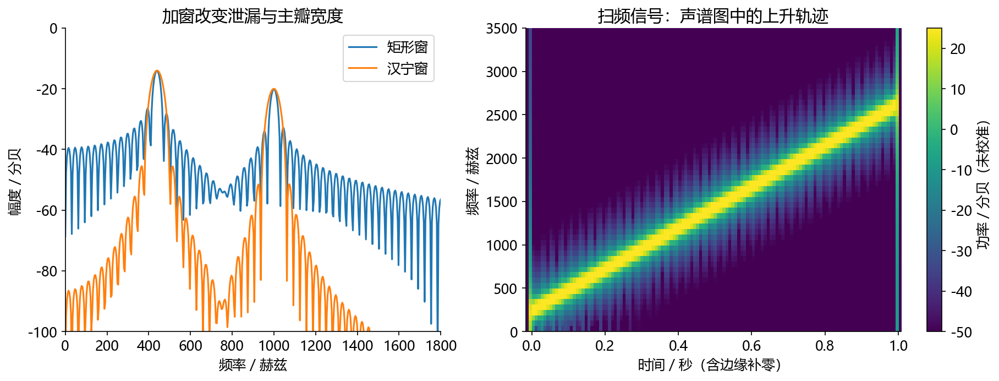
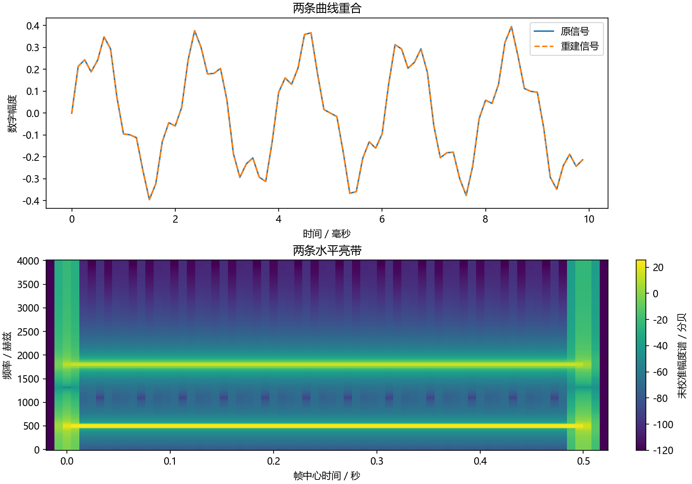

看图理解 · 跟着推演 · 对照真实结果
第05课 · 频谱里的一根峰到底表示什么
先建立直觉，再逐节讲原理、代码与结果；章节目录可定位学习。从500 Hz与1800 Hz叠加音出发，讲清FFT格点、窗函数、相位和STFT重建。
从直觉、原理，到代码与结果
本版保留导览小实验，增加教材逐节精讲、代码分段阅读和结果解释。三个项目另有本次真实模型短推理，第 12 课增加实际训练曲线。按右侧小节分次学习即可，不必一次看完。
完整文字、规范公式和注释代码仍在上方“读完整图文”。视频中的历史报告、教学算例与本次实测分别标明，短演示不冒充完整重训或设备验收。
先修：第04课的数组形状与分帧；第01课的频率、相位。
- 能把FFT索引换成Hz并读懂幅度谱
- 知道加窗和补零分别改变什么
- 理解STFT为何需要相位、重叠和归一化
本课覆盖清单与证据范围
- 1. 卷积：每个历史采样留下多大影响
- 2. DFT 在问：“这段数据含有多少这种旋转节奏？”
- 3. 为什么频谱会漏出一片，窗函数又牺牲了什么
- 4. STFT：把“整段频谱”变成“每个短时刻的频谱”
- 5. 核心代码：保留相位，再把各帧加回去
- 6. 逐步故障实验：故意改错，比再读一遍有效
- 7. 不同图回答不同问题，别被颜色带走
- 8. 自测与参考答案
- 9. 就业验收任务
结果从哪里来
- 导览中的小算例实际执行
- 原教材逐节讲解；正文代码/公式/图保留
实际代码验证单帧FFT、窗函数及相位回环，不是完整STFT或流式引擎；多帧重建的完整程序保留在本课图文教程，幅度谱未作物理校准。
新版视频时间轴已改变，单独记录续播位置；学习计划的完成勾选保持不变。
跟着运行：注释代码、实际输出与结果图
下面代码在生成本站时实际执行。这里只是教学小实验，不是完整模型训练或业务设备测评。
import numpy as np
fs, N = 8000, 256 # 观察32毫秒
t = np.arange(N) / fs
x = 0.3*np.sin(2*np.pi*500*t) + 0.1*np.sin(2*np.pi*1800*t)
spec = np.fft.rfft(x) # 保留复数幅度与相位
window = np.hanning(N)
win_spec = np.fft.rfft(x * window)
freq = np.fft.rfftfreq(N, 1/fs)
amp = 2 * np.abs(spec) / N # 单边幅度谱
amp[[0, -1]] /= 2 # DC和奈奎斯特点不翻倍
win_amp = 2 * np.abs(win_spec) / window.sum()
win_amp[[0, -1]] /= 2
restored = np.fft.irfft(spec, n=N) # 保留相位的回环
wrong = np.fft.irfft(np.abs(spec), n=N) # 故意丢相位
print('频率间隔:', fs/N, 'Hz')
print('FFT形状:', spec.shape)
print('正确回环误差:', np.max(np.abs(restored-x)))
print('丢相位误差:', np.max(np.abs(wrong-x)))
本次实际输出
频率间隔: 31.25 Hz FFT形状: (129,) 正确回环误差: 1.6653345369377348e-16 丢相位误差: 0.6830111205428785

精讲中的代码、运行步骤与大图
代码片段用于逐行理解；真实运行结果仅限明确标注“本次实际”的部分。教材历史图保留原有实验范围。
代码精读 01 · 第1–7行
源码精读 / 教学片段，需配套环境与上下文，不等同于独立脚本。
import numpy as np
x = np.array([1.0, 2.0, 3.0]) # 三个输入采样
h = np.array([0.5, 0.5]) # 当前和前一采样各占一半
y = np.convolve(x, h, mode="full") # 保留卷积尾巴
print("完整卷积:", y)
print("输出长度:", len(y))结果读图 01 · 1. 卷积：每个历史采样留下多大影响
原教材运行记录

原教材已存图 不是本次新测 先确认实验范围 再解释坐标与单位
结果读图 03 · 3. 为什么频谱会漏出一片，窗函数又牺牲
原教材运行记录

原教材已存图 不是本次新测 先确认实验范围 再解释坐标与单位
代码精读 05 · 第1–18行
源码精读 / 教学片段，需配套环境与上下文，不等同于独立脚本。
import numpy as np
fs = 8000
t = np.arange(4000) / fs
x = 0.3*np.sin(2*np.pi*500*t) + 0.1*np.sin(2*np.pi*1800*t)
length, hop = 256, 64
window = np.hanning(length) # 窗在两端接近/等于零
padded = np.pad(x, (length, length)) # 让原信号两端也被有效窗覆盖
extra = (-(len(padded) - length)) % hop
padded = np.pad(padded, (0, extra)) # 补齐最后一个完整帧
starts = np.arange(0, len(padded) - length + 1, hop)
frames = np.stack([padded[s:s+length] for s in starts])
spec = np.fft.rfft(frames * window, axis=1) # 保留复数，不只保留绝对值
# 每帧逆变换，再乘合成窗，放回原来的时间位置。
back_frames = np.fft.irfft(spec, n=length, axis=1)
output = np.zeros_like(padded)
weight = np.zeros_like(padded)代码精读 05 · 第19–36行
源码精读 / 教学片段，需配套环境与上下文，不等同于独立脚本。
for start, frame in zip(starts, back_frames):
output[start:start+length] += frame * window
weight[start:start+length] += window ** 2
# 分析窗和合成窗各乘一次，所以累计的是窗的平方。
valid = weight > 1e-12
output[valid] /= weight[valid]
restored = output[length:length+len(x)] # 去掉人为补的边界
print("分帧/STFT 形状:", frames.shape, spec.shape)
print("最大重建误差:", np.max(np.abs(restored-x)))
# 从本段实际 spec 和 restored 绘图；请在课程根目录运行。
from pathlib import Path
import matplotlib
matplotlib.use("Agg")
import matplotlib.pyplot as plt
plt.rcParams.update({"font.family": "Microsoft YaHei", "axes.unicode_minus": False})
assert Path("tutorial/chapters").is_dir(), "请在 audio-course-zh 根目录运行"代码精读 05 · 第37–49行
源码精读 / 教学片段，需配套环境与上下文，不等同于独立脚本。
fig, axes = plt.subplots(2, 1, figsize=(10, 7), layout="constrained")
axes[0].plot(t[:80]*1000, x[:80], label="原信号")
axes[0].plot(t[:80]*1000, restored[:80], "--", label="重建信号")
axes[0].set(xlabel="时间／毫秒", ylabel="数字幅度", title="两条曲线重合")
axes[0].legend()
centers = (starts+length/2-length)/fs # 减去前端补零对应的时间
frequencies = np.fft.rfftfreq(length, 1/fs)
image = axes[1].pcolormesh(centers, frequencies,
20*np.log10(np.maximum(np.abs(spec.T), 1e-6)), shading="auto")
axes[1].set(xlabel="帧中心时间／秒", ylabel="频率／赫兹", title="两条水平亮带")
fig.colorbar(image, ax=axes[1], label="未校准幅度谱／分贝")
fig.savefig("tutorial/figures/ch05_stft_rebuild.png", dpi=150)
plt.close(fig)结果读图 05 · 5. 核心代码：保留相位，再把各帧加回去
原教材运行记录

原教材已存图 不是本次新测 先确认实验范围 再解释坐标与单位
闭卷自测：16 kHz采样、400点FFT，频率间隔和索引25对应频率是多少？
间隔16000/400=40 Hz；索引25对应1000 Hz。补零只加密频率取样，不增加真实观察时长。
逐字讲稿 · 可定位回看
一张照片只能告诉你某个瞬间的画面，连续照片才能看见动作。整段录音做一次频谱，容易丢掉“什么时候发生”的信息；短时频谱则把时间线保留下来。
采样率 16000 Hz，取连续 320 点作一帧。320 除以 16000，等于 0.02 秒，也就是 20 毫秒。 每次向后移动 160 点，也就是 10 毫秒，再分析一帧。相邻两帧会重叠，并不是把录音切成互不相交的块。
把每帧的频率能量排在一起，就得到声谱图。读图时先找时间轴、频率轴，再看颜色代表幅度、功率还是分贝。 更密的频率网格不必然意味着更强的真实分辨能力。补零可以让图上的格点更密，却没有创造新的观察时长。
今天的输入是两条正弦相加，一条五百赫兹、幅度零点三，另一条一千八百赫兹、幅度零点一。时域曲线会弯来弯去，但组成它的积木只有两种频率。
波形适合看什么时候发生变化，频谱适合看有哪些频率成分。不是把横轴标签从时间改成频率就行，而是要进行一次明确的数学变换。
我们先用三十二毫秒片段理解这次变换，再把同样的操作搬到连续短帧上。这样就能理解声谱图为什么有时间、频率和颜色三个维度。
可以把变换理解为：依次问这段数据与每种标准旋转节奏有多像。对每个频率，既比较余弦方向，也比较正弦方向，把两种结果放进一个复数。
复数不是多出来的神秘声音。它同时携带系数大小和相位；绝对值描述大小，角度保留周期位置。只留下绝对值，会删掉一部分重建所需信息。
图里的求和遍历这段全部样本。FFT是加速计算这个离散傅里叶变换的算法，不能把FFT和DFT当成两种不同的声学现象。
采样率八千，长度二百五十六，频率格点间隔是三十一点二五赫兹。索引十六乘这个间隔，才得到五百赫兹。索引十六不是十六赫兹。
一千八百除以三十一点二五，得到五十七点六，不是整数。也就是说，第二条纯音不正好落在我们这把离散尺子的刻度上，后面会看到它散到附近。
真实输入具有共轭对称，实数FFT只存非负频率，所以二百五十六点输入返回一百二十九个复数。起点是直流，终点是四千赫兹的奈奎斯特点。
我们只观察了有限片段。变换对它作特定的周期解释时，首尾接不上会带来边界变化。原来单一频率的成分，可能在许多附近格点都有系数。
五百赫兹在三十二毫秒里恰好十六圈，更适合当前格点；一千八百赫兹是五十七点六圈，边界不整齐，所以泄漏更明显。
因此频谱上一片小尾巴，不能直接断言录音里多了很多噪声。应先检查观察长度、窗函数和频率是否对齐格点，再判断物理来源。
Hann窗把片段两端逐渐压低，减轻边界突变，通常降低远处旁瓣。但峰附近的主瓣会更宽，所以不是所有地方都变得更精细。
如果要找强音旁边很弱的成分，降低旁瓣可能很有帮助；如果要分开两个很近的强音，主瓣宽度又会成为限制。选择窗口要对应具体问题。
把片段补零会让频谱采样网格更密，曲线看起来更顺滑，却没有增加真实观察时长。不能把二百五十六点补到一千零二十四点，宣称多录了四倍信息。
前五行生成两频率叠加的短片段，再计算复数FFT。这里不只保存绝对值，因为后面要做保留相位的逆变换回环。
随后加Hann窗并建立赫兹坐标。单边谱把内部频率贡献翻倍，而直流与奈奎斯特点不翻倍。加窗谱用窗的总和做幅度标度，避免只因窗压低了数据就误读峰高。
最后做两个逆变换：一个使用完整复数谱，另一个故意只用绝对值。两者输出都能有正确长度，但数值是否正确需要检查误差，不能只看程序有没有报错。
实际图中在五百与一千八百赫兹附近出现两组峰。Hann窗曲线在峰附近更宽，远处泄漏通常更低。第二组不落整数格点，峰高也受有限片段与窗影响。
不要把某一个格点高度直接等同于纯音的精确真实幅度，更不要叫它声压级。这里是按已声明规则计算的未校准数字幅度谱。
保留完整复数谱的回环误差接近浮点精度；丢相位的回环误差明显变大。这个实验说明相位对原波形重建重要，但只验证了一帧FFT，不冒充完整流式STFT处理器。
频谱之前还有一个必须认识的操作：卷积。把房间想成一次拍手会产生直达声和稍后反射。连续输入的每个采样，都按同一个脉冲响应留下后续影响。
手算输入一、二、三，权重零点五、零点五。输出依次是零点五、一点五、二点五、一点五。最后仍有尾巴，因为系统还记着前一个输入。
完整长度是输入长度加滤波器长度减一。这会影响评测对齐。卷积解释依赖线性时不变近似，削波、自动增益和时变路径不能无条件用固定卷积描述。
一句话前后内容不同，只算一次整段频谱会混合这些时间事件。STFT每隔一段距离取一个短窗口，加窗后做FFT，得到时间帧乘频率格点的复数矩阵。
例如一万六采样率，五百一十二点窗口是三十二毫秒，一百二十八点帧移是八毫秒。窗口覆盖范围与移动步长是两个参数，不要把它们混为一谈。
大窗通常更容易看清细致频率结构，小窗更容易定位突然变化。但帧移八毫秒不代表总延迟八毫秒，还要算取窗方式、未来前瞻、缓存与计算时间。
每帧逆变换后，要把它放回原来的时间位置。窗口有重叠，同一个采样会收到多帧贡献，所以还要按对应权重归一化，而不是简单把帧拼接。
如果分析和合成各乘一次相同窗，权重累积就是窗的平方和；若窗口方案不同，就应按实际乘积和重建条件处理，不能死记所有方法都除窗平方。
边界也重要。Hann端点为零，如果某个原始采样没有被有效窗口覆盖，就可能无法恢复。完整原课给出了补零、重叠和裁剪的回环代码，先通过回环再写频域增强。
声谱图的横轴是时间，纵轴是频率，颜色可能是幅度或功率的对数值。先看标注，再解释亮带。稳定纯音常形成横向带，短点击常形成较宽频率范围的瞬态。
如果降噪前后各自按最大值归一化，微弱噪声也可能被画得很亮。比较时必须说明是否使用共同参考和共同颜色范围，否则视觉强弱不等于实际强弱。
还有一个常见错误：把图像颜色保存下来后期待精确还原声音。颜色通常已丢相位，还可能经过裁剪、对数和量化，不是原始复数STFT的完整替代品。
暂停算一下：一万六采样率，四百点FFT，格点间隔是多少？索引二十五对应什么频率？请别忘了索引从零开始。
间隔是四十赫兹，索引二十五对应一千赫兹。如果把同一片段补零到一千六百点，格点会更密，但真实观察时长并没有改变。
下一步选一条有使用许可的短音频，画正确坐标的声谱图，再做STFT到逆STFT回环，检查长度、误差和首尾。这个基础测试比急着叠更深网络更能排除系统错误。
相邻帧有重叠，同一个原始样点会出现在多个帧里。每帧逆变换后如果直接接起来，这个样点可能重复，边界也可能跳变。正确思路是按原时间位置把重叠部分相加。
若分析与合成都乘窗，累积的是窗的平方权重。输出每个位置要除以相应的权重之和；权重为零的位置必须专门处理，不能为了不报错随意加一个大常数。
最先做恒等变换测试：频谱不修改，恢复后与输入逐点比较，并检查首尾长度。通过只说明前后端匹配，噪声也被一起恢复，绝不是降噪质量证明。
采样率八千、FFT长度五百一十二时，频点间隔是十五点六二五赫兹。这个数字告诉你频谱网格怎样标坐标，但分辨相近频率还受到有效观察时长和窗主瓣宽度影响。
只观察很短一段后补很多零，频谱曲线会画得更细，却没有获得更长时间的信息。就像把同一张低分辨率照片放大，不等于拍到了新的细节。
因此比较频谱要同时注明实际窗长、FFT长度、窗类型和归一化。换了窗以后峰高变化，不一定是声音真的变小，也可能是窗增益与标定口径变了。
假设房间会让一次拍手变成“立即一声＋稍后较小的一声”。用脉冲响应 h[n] 表示这间房间对单个理想脉冲的响应，那么连续说话就是许多微小激励的响应叠加。线性时不变近似下：
x 是输入，h 是脉冲响应，y 是输出。k 表示回看多少采样。直观上，输出是“当前及历史输入按权重相加”。像一道菜每次加入一勺原料，锅里的味道保留过去的影响；类比只强调记忆与叠加，真实系统若有削波、自动增益或时变路径，就不能完全用固定线性卷积描述。
手算 x=[1,2,3]，h=[0.5,0.5]，边界外输入视为 0，完整卷积为 [0.5,1.5,2.5,1.5]。例如第二个输出是 0.5乘2+0.5乘1=1.5。最后一个值不是 0，因为输入结束后系统还有历史影响。长度是 3+2-1=4，这会影响音频对齐和评测裁剪。
上面的最小代码预期输出 [0.5,1.5,2.5,1.5]。图由 beginner_labs.py 的 filter_and_room() 生成，
是同一原理的扩展实验，不是四个输出点的绘图：左上给出 9 个相等滤波权重；右上显示它对不同频率的影响并不相同；左下用三根脉冲表示直达声和两次反射；
右下是另一个独立的理想指数衰减模型，不能把两幅下图误认为同一个房间的测量。
先看中文注释：三个输入采样；当前和前一采样各占一半；保留卷积尾巴。卷积按核长度读取邻域。填充方式决定边界和输出长度，双侧填充还可能引入未来信息。 打印是观测点。把这里的真实值与理论预期比较，若不一致应保留输出排错，而不是手工改成期望数字。
打印是观测点。把这里的真实值与理论预期比较，若不一致应保留输出排错，而不是手工改成期望数字。
先看中文注释：三个输入采样；当前和前一采样各占一半；保留卷积尾巴。卷积按核长度读取邻域。填充方式决定边界和输出长度，双侧填充还可能引入未来信息。 打印是观测点。把这里的真实值与理论预期比较，若不一致应保留输出排错，而不是手工改成期望数字。
先看这张随教材保存的图。实际运行的滤波器与简化房间实验。本次视频引用既有结果，不把它称为新运行。
横轴、纵轴、图例和单位决定图在回答什么问题。若曲线重合，先问它验证的是数值等价、形状还是算法质量。图像相似不自动证明真实业务效果相同。
把图中观察与本节假设联系起来，再回到前面的代码确认数组来源。合成信号实验、历史报告和真实模型输出属于不同证据范围，不能混成同一个成绩。
傅里叶变换把信号表示为不同频率成分的组合。对长度 N 的离散片段，DFT 为：
先不用害怕复数：它把“与余弦像不像”和“与正弦像不像”放在一起，保留了幅度和时间位置的信息。lvert X[k]rvert 描述该频率系数大小，arg X[k] 描述相位。只存绝对值会丢相位，不能指望简单逆变换还原原波形。
FFT 是高效计算 DFT 的算法家族，不是另一种物理频谱。频率格点为 f下标k=（k f下标s）除以（N）。16 kHz、512 点 DFT 的间隔为 31.25 Hz，索引 k=32 对应 1000 Hz；这里从 k=0 计数，所以它是数组的第33个元素。 对实输入，rfft 利用共轭对称，只保留非负频率；512 点输入对应 257 个复数系数。NumPy FFT 文档给出了实际的符号和归一化约定。
你只截取了一段声音。DFT 计算相当于在特定意义上处理这个有限片段的周期延拓；若片段首尾接不上，就会出现额外的边界变化，频谱能量扩散到周围格点，叫谱泄漏。一个频率不正好落在格点上的正弦，尤其容易显出这种现象。
Hann 窗把两端逐渐压低，通常能降低远处旁瓣，但主瓣会更宽。所以加窗不是“使所有分辨率都变好”：想看旁边的小分量与想区分两个非常近的大分量，可能有不同取舍。窗长决定观察的时间范围；补零会让频率采样网格更密，却不会凭空增加原始观测时长。
这张图来自 run_experiments.py 的实际实验。左图同样两个频率分量，Hann 窗远处泄漏较低，峰附近却更宽；右图是频率随时间上升的合成扫频信号，亮色轨迹从左下走向右上。右图横轴是时间、纵轴是频率、颜色是未校准的功率 dB，不是声压级。它与下面的重建代码属于同类实验，但输入信号不同。
先看这张随教材保存的图。已运行的窗函数比较与扫频 STFT。本次视频引用既有结果，不把它称为新运行。
横轴、纵轴、图例和单位决定图在回答什么问题。若曲线重合，先问它验证的是数值等价、形状还是算法质量。图像相似不自动证明真实业务效果相同。
把图中观察与本节假设联系起来，再回到前面的代码确认数组来源。合成信号实验、历史报告和真实模型输出属于不同证据范围，不能混成同一个成绩。
一句话的前半段与后半段可能完全不同。短时傅里叶变换（STFT）先分帧、再加窗、再逐帧 FFT。结果是一个复数矩阵。本课约定 [时间帧,频率格点]，而某些库用 [频率,时间]；绘图时经常还要转置，别把显示方向当作储存方向。
以 16 kHz 为例，32 ms 窗长为 512 点，8 ms 帧移为 128 点。大窗通常给出更细的频率结构，但跨越更长时间；
小窗更容易追踪突然变化，却更难分辨很近的频率。流式系统还要区分窗长、帧移、前瞻和计算耗时：帧移 8 ms 不代表整个算法延迟必然只有 8 ms。
下面是教学实现，使用对称 Hann 窗、两端补零，以及窗平方归一化。它不是实时处理器，因为提前访问了整段输入。请先预测 frames 和 spec 的形状，再运行。
上半图重建曲线与原波形几乎完全重合，不能仅凭肉眼证明完美，所以代码还打印最大误差；本地实际运行为约 1.67×10⁻¹⁶。下半图两条亮带对应 500 Hz 和 1800 Hz。两端略超出原始 0—0.5 秒范围，是边界补零及帧中心定义带来的，不是额外录到了声音。
预期形状为 (68,256) 和 (68,129)。重建误差应接近浮点精度，不要求精确等于 0。为什么分母是窗平方？分析时已经乘一次窗，合成时又乘一次；第 m 帧在采样点 n 的贡献为 x[n] w[n-mH]的幂2，其中 H 是帧移。
重叠位置按帧累加后，除以对应的窗平方权重和，才能回到 x[n]，前提是该权重和非零。如果合成采用不同窗口，则要按对应的乘积关系与重建条件处理，不能死记“任何 STFT 都除窗平方”。
这段绘图代码使用幅度谱的 20以十为底的对数，颜色标注“未校准”，避免让它被误读为声压级。你也可以改画功率谱，
但必须同时换成相应的 10以十为底的对数 与参考约定。形状和坐标正确，是让图具有解释价值的第一步。
arange按固定步长生成索引。若随后除以采样率，才把采样点编号换成秒。 正弦或余弦的输入是弧度。频率乘以时间再乘二派，才得到相位；幅度系数控制波形大小。
先看中文注释：窗在两端接近/等于零；让原信号两端也被有效窗覆盖；补齐最后一个完整帧。arange按固定步长生成索引。若随后除以采样率，才把采样点编号换成秒。
先看中文注释：保留复数，不只保留绝对值；每帧逆变换，再乘合成窗，放回原来的时间位置。。频域变换把一段时域样本变成复数系数。实部和虚部一起携带幅度与相位，不应只保留绝对值后直接当作原信号。 逆变换返回时域样本；还需按前向相同的长度、窗口和步长重建，才能判断误差是否来自算法。
先看中文注释：分析窗和合成窗各乘一次，所以累计的是窗的平方。。这几行仍属于5. 核心代码：保留相位，再把各帧加回去的同一处理链，输入变量沿用前一段，不是一个独立程序。
先看中文注释：去掉人为补的边界；从本段实际 spec 和 restored 绘图；请在课程根目录运行。。绝对值对实数表示幅度大小，对复数表示模长。它丢掉符号或相位，不能代替完整复数频谱。 打印是观测点。把这里的真实值与理论预期比较，若不一致应保留输出排错，而不是手工改成期望数字。
断言把预期写成可失败的检查。通过只说明这一条件成立，不自动代表声音质量或全部场景合格。 绘图展示的是传入数组。核对横轴单位、图例与统一尺度后，才可以比较不同处理的变化。
先看中文注释：减去前端补零对应的时间。绘图展示的是传入数组。核对横轴单位、图例与统一尺度后，才可以比较不同处理的变化。
频域变换把一段时域样本变成复数系数。实部和虚部一起携带幅度与相位，不应只保留绝对值后直接当作原信号。 绝对值对实数表示幅度大小，对复数表示模长。它丢掉符号或相位，不能代替完整复数频谱。 对数压缩动态范围。先确认输入非负并加小正数防止对零取对数；振幅比与功率比的分贝系数不同。
绘图展示的是传入数组。核对横轴单位、图例与统一尺度后，才可以比较不同处理的变化。
先看这张随教材保存的图。本段 STFT 与重建代码的同参数实际运行图。本次视频引用既有结果，不把它称为新运行。
横轴、纵轴、图例和单位决定图在回答什么问题。若曲线重合，先问它验证的是数值等价、形状还是算法质量。图像相似不自动证明真实业务效果相同。
把图中观察与本节假设联系起来，再回到前面的代码确认数组来源。合成信号实验、历史报告和真实模型输出属于不同证据范围，不能混成同一个成绩。
先把 spec 替换成 abs(spec) 再逆变换，重建数值会改变，因为所有复数相位信息丢了；本段代码没有播放步骤，先看误差与波形即可。再恢复相位，只注释掉代码中的 output[valid] /= weight[valid]，你会看到振幅随重叠权重变化。
最后取消边界补零时，要同时调整 starts 和最终裁剪位置，再检查开头几个采样；Hann 窗端点为零时，边界可能没有足够信息可恢复。若只删除一行补零却保留旧裁剪规则，长度错位不能当作窗函数失效的证据。
做完这些反例，你就能回答为什么“把频谱弄回时域”不是只调用一次 IFFT。增强模型若修改了幅度、复数谱或相位，重建策略和损失设计都会受影响；很多“声音断断续续”问题来自分帧、窗与状态，而不是网络层数不够。
波形适合定位爆音、停顿、削波和大致时序；整段频谱适合观察稳定的频率成分，但会混合不同时间的事件；声谱图同时展示时间和频率，却需要选择窗长等参数。同一段音频在这三种表示里不会长得一样，也不应该长得一样。检查一个短促点击声时，小时间窗很有用；研究两个靠得很近的稳定音调时，又可能需要更长观测。
颜色缩放也会影响判断。若两张图分别按自己的最大值归一化，弱信号可能看起来与强信号一样亮；若每张图自动设置颜色上下界，“降噪前后颜色都很鲜艳”也不能说明噪声没变。比较两个结果时，要明确是否使用同一单位、同一参考值、同一颜色范围。图题里写“各自归一化”与“共同参考”是两种不同实验。
一个实习报告里，图不应只是装饰。请在图下注明采样率、窗长、帧移、幅度或功率、颜色参考，然后用一句话指出读者应该看哪里。例如“观察 0.2 秒附近的宽带竖线，它对应一次短促冲击”，比“结果如图所示”更像一个真正做过分析的人。
1. 16 kHz、400 点 DFT，频率间隔是多少？答：40 Hz。 2. 输入长 1000，FIR 长 65，完整卷积多长？答：1064。
3. 把 400 点片段补零到 1600 点，是否等于真实多录了四倍时长？答：不是，只是频谱取样更密。 4. 为什么只保存声谱图颜色一般不能精确恢复音频？
答：常已丢相位，还可能做了对数、裁剪和量化。 5. STFT 窗长 32 ms、帧移 8 ms，算法延迟一定为 8 ms 吗？答：不一定，还取决于取窗方式、前瞻、缓存与计算。
录入或选择一条有使用许可的短音频，画波形和带正确坐标的声谱图；解释一段稳定元音、一次瞬态与一段静音在图中的差别。
再做“STFT → 原样 ISTFT”回环测试，检查长度、误差和首尾样本。
通过这一步再开始写频域降噪，会少掉大量难定位问题。
适用边界与参考正文
实际代码验证单帧FFT、窗函数及相位回环，不是完整STFT或流式引擎；多帧重建的完整程序保留在本课图文教程，幅度谱未作物理校准。
教学图与实验图由本站整理生成；项目代码、预训练模型和公开数据的来源见配套正文。旁白是本地中文语音合成，不是教师真人录音，也不是 NotebookLM 生成。没有向 Google 上传项目材料。